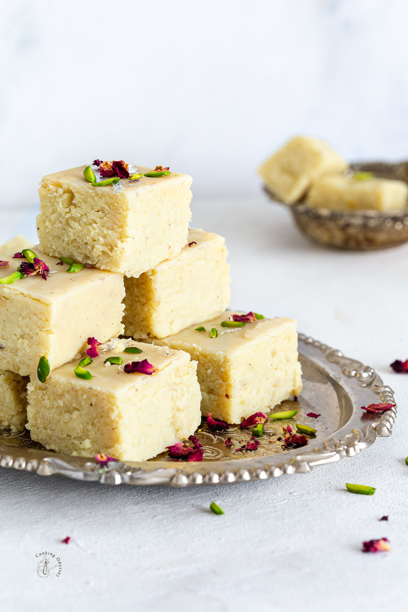

Gulab Jamun
Integrents
- Khoya
- Maida
- Baking soda
- Milk
- Ghee
- Sugar
- Water
- Cardamom
- Rose Water
Recipe
- In a pan, add sugar and water.
- Heat until sugar dissolves, then add crushed cardamom and saffron (optional).
- Boil for 5–7 minutes until slightly sticky, then add rose/kewra water and keep warm.
- In a bowl, mash khoya until smooth.
- Add maida, baking soda, and semolina (optional) and mix gently.
- Add milk little by little to make a soft, smooth dough.
- Rest the dough for 5–10 minutes.
- Make small smooth balls without cracks.
- Heat oil/ghee on medium-low flame and fry balls until golden brown.
- Remove from oil and immediately soak in warm sugar syrup.
- Let them soak for 1–2 hours before serving.

Barfi
Integrents
- Khoya
- Sugar
- Cardamom powder
- Ghee
- Chopped nuts
- Rose water
Recipe
- Heat a pan on low flame and add khoya.
- Stir continuously until it softens and releases some fat.
- Add sugar and mix well.
- Cook the mixture until it thickens and starts leaving the sides of the pan.
- Add cardamom powder and mix.
- Add rose/kewra water for flavor.
- Grease a plate with ghee and pour the mixture into it.
- Spread evenly and smooth the top.
- Garnish with chopped nuts.
- Let it cool completely, then cut into squares or diamonds.
